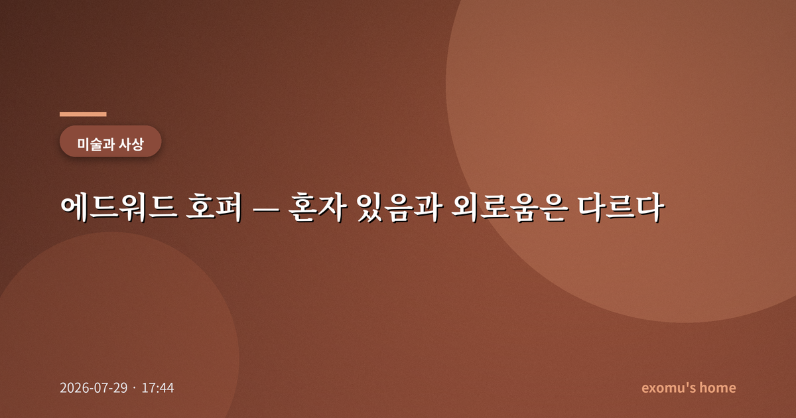
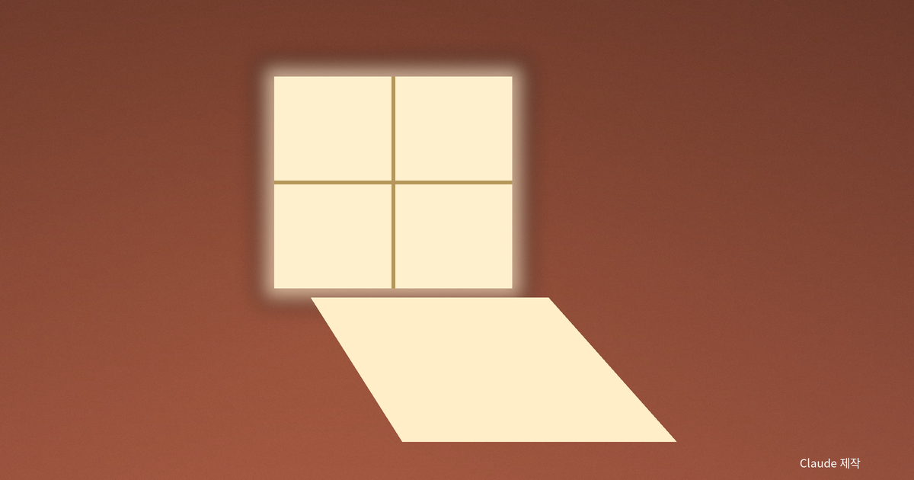
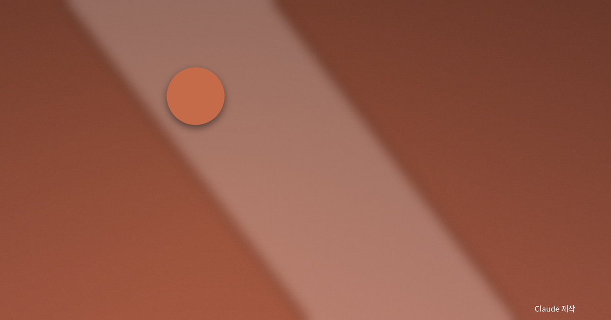
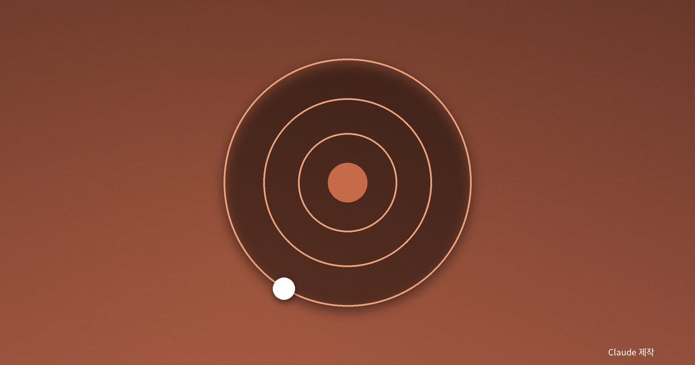

에드워드 호퍼 — 혼자 있음과 외로움은 다르다

밤의 창 앞에서
언젠가 야근을 마치고 텅 빈 거리를 걷다가, 불 켜진 24시간 식당 안에 혼자 앉은 사람을 보았다. 유리창 안쪽은 환하고 바깥은 어두웠다. 나는 그 장면에서 이상하게도 쓸쓸함보다 어떤 고요한 위엄을 느꼈다. 나중에야 그 감정에 이름을 붙일 수 있었다. 그것은 에드워드 호퍼의 그림이 오래도록 붙잡아 온 감정이었다.
호퍼는 20세기 미국의 화가다. 그의 그림에는 대체로 사람이 적고, 그 적은 사람마저 서로를 보지 않는다. 밤의 식당, 텅 빈 사무실, 햇빛만 가득한 빈 방. 나는 그의 그림이 외로움을 그린 것이 아니라 '혼자 있음'을 그린 것이라고 생각한다. 그리고 이 둘은 결코 같지 않다.

빛이 만드는 고독
호퍼의 진짜 주인공은 사람이 아니라 빛이다. 그의 화면에는 이른 아침이나 늦은 오후의 비스듬한 햇빛, 혹은 밤거리를 홀로 밝히는 인공의 빛이 길고 선명한 그림자를 만든다. 빛은 대상을 또렷하게 드러내면서 동시에 그 주변의 침묵을 더 깊게 만든다. 밝을수록 더 외로워 보이는 역설이 거기 있다.
나는 이 빛이 시간을 붙잡아 두는 장치라고 느낀다. 그의 그림 속 인물들은 무언가를 막 끝냈거나 아직 시작하지 않은, 어중간한 시간에 놓여 있다. 사건은 일어나지 않는다. 그 멈춘 시간 속에서 우리는 인물이 아니라 우리 자신을 들여다보게 된다.
그의 대표작들을 떠올려 보면 이 점이 분명해진다. 늦은 밤 텅 빈 거리에 홀로 불을 밝힌 식당, 아무도 서로를 마주 보지 않는 카운터의 사람들. 그러나 그 장면은 우리를 불쌍하게 만들기보다 오히려 차분하게 만든다. 마치 소란한 하루가 끝난 뒤 찾아오는 고요처럼, 호퍼의 빛은 바깥의 소음을 걷어 내고 한 사람의 내면만을 조용히 남긴다.

도시는 왜 사람을 외롭게 하나
흥미롭게도 호퍼의 고독은 황야가 아니라 도시에서 태어난다. 수많은 사람이 벽 하나를 사이에 두고 살아가지만 서로를 모르는 곳, 그것이 도시다. 창문은 열려 있는데 아무도 넘어오지 않는다. 나는 도시의 외로움이 사람이 없어서가 아니라 사람이 너무 많아서 생기는 것이라고 생각한다. 익명의 군중 속에서 각자는 오히려 더 또렷한 섬이 된다.
그러나 호퍼는 이 고독을 불행으로 그리지 않는다. 그의 인물들은 초라하지 않고, 오히려 자기 자신과 조용히 함께 있는 것처럼 보인다. 여기서 앞서 말한 구분이 다시 떠오른다. 외로움은 연결이 끊긴 결핍의 상태이고, 혼자 있음은 스스로 선택한 충만의 상태일 수 있다.
나는 그의 그림이 위로가 되는 이유가 바로 거기 있다고 생각한다. 그것은 '너만 혼자인 것이 아니다'라고 말해 주는 대신, '혼자여도 괜찮다'고 말해 준다. 고독을 미화하지도, 두려워하지도 않는 이 담담한 시선이야말로 호퍼가 백 년 가까이 사랑받는 이유일 것이다.

재현이 아니라 분위기
호퍼의 그림은 사진처럼 사실적으로 보이지만, 실은 현실을 그대로 옮긴 것이 아니다. 그는 실제 장소를 참고하되 불필요한 것을 걷어 내고, 빛과 그림자와 여백을 재배치해 하나의 감정을 짓는다. 그림이 하는 일은 세상을 복제하는 것이 아니라 세상을 보는 하나의 방식을 제안하는 것이다. 우리가 그의 그림 앞에서 멈추는 이유는, 그 방식이 우리 안에 이미 있던 감정을 알아보게 해 주기 때문이다.

혼자 있는 법을 배운다는 것
연결이 끊임없이 요구되는 시대에, 우리는 혼자 있는 능력을 점점 잃어 간다. 잠깐의 정적도 견디지 못해 화면을 켠다. 호퍼의 그림은 그 정적 속으로 우리를 데려간다. 나는 그의 빈 방들을 보면서, 외로움은 피해야 할 것이지만 혼자 있음은 배워야 할 기술이라는 생각을 한다. 자기 자신과 편안히 있을 수 있는 사람만이, 타인에게도 매달리지 않고 다가갈 수 있기 때문이다. (아래 이미지는 호퍼의 분위기를 상징적으로 재구성한 것입니다.)